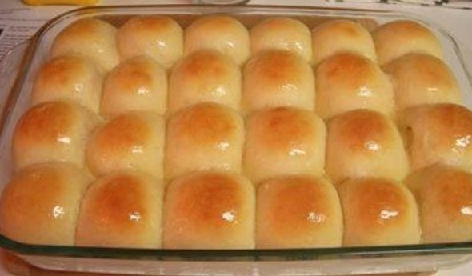

Yeast Rolls

Description
A recipe for "Grandma's Yeast Rolls"
Ingredients
- 2 1/2 cups warm water
- 1 1/2 tablespoons active dry yeast
- 1/2 cup white sugar
- 1 tablespoon salt
- 3/4 cup shortening
- 7 cups all-purpose flour, divided, or more as needed
- 1/2 cup butter, melted
Steps
- Dissolve yeast in warm water in the bowl of a stand mixer fitted with the dough hook. Stir in sugar and salt until
you see foam rising. Add 3 cups flour and 3/4 cup shortening; mix with the dough hook until the mixture is the
consistency of a thick pancake batter.
- Fill a pot with hot water.
- Remove the mixer bowl and cover it with plastic wrap and a towel. Place the bowl over the pot of hot water, making
sure the bottom does not touch the water. Let rise until doubled in size, 45 minutes to 1 hour.
- Place the bowl back on your stand mixer and gradually mix in remaining 4 cups flour until dough is smooth and
elastic; you may need to add up to 1 additional cup.
- Heavily grease two 9x13-inch pans with shortening.
- Divide dough into 24 balls. Place 12 balls into each of the prepared pans; cover with plastic wrap and a towel.
Let rise in a warm area until doubled in size, about 1 hour; balls will start out at about 1 1/2 inches in
diameter but will rise and touch the sides of the pans.
- Preheat the oven to 375 degrees F (190 degrees C).
- Bake rolls in the preheated oven until golden brown on top, 25 to 30 minutes. Remove from the oven and brush
melted butter over top.
Main Page